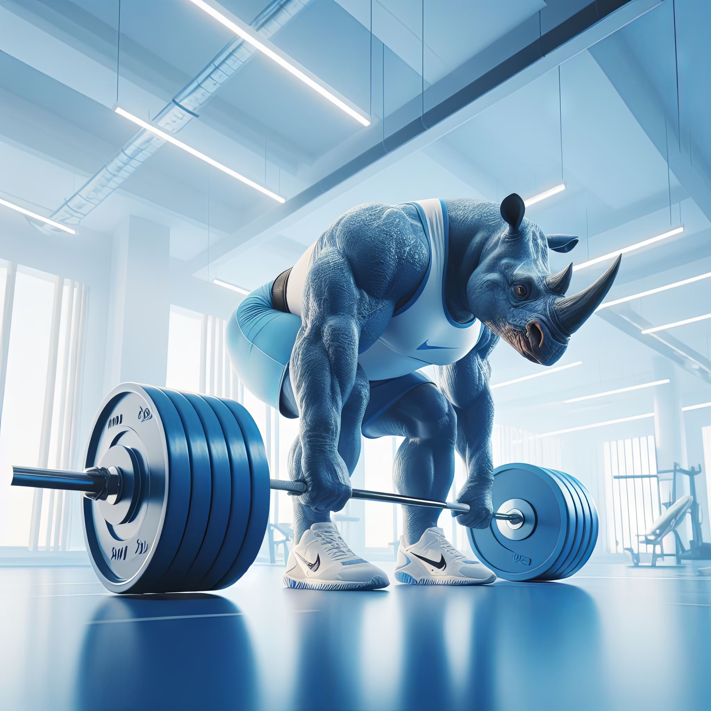
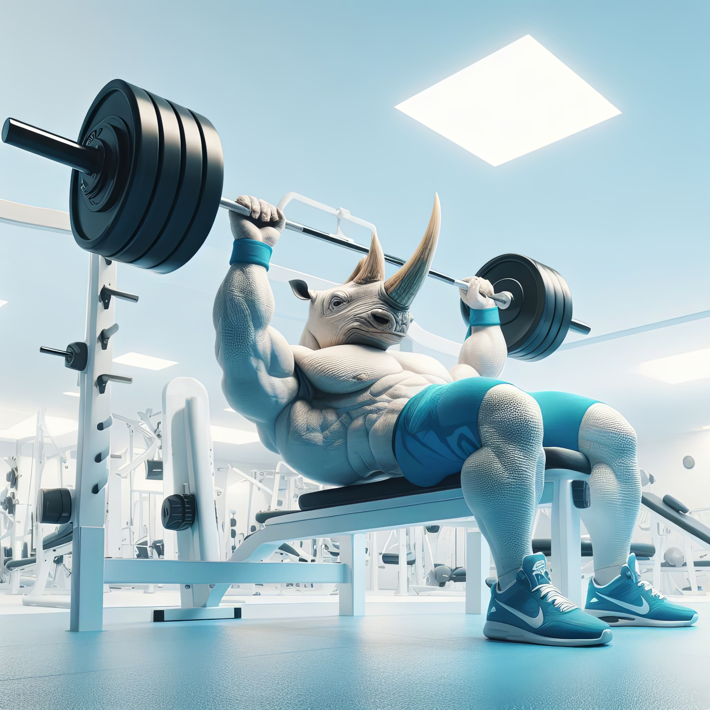

Trójbój siłowy
PRZYSIAD
Sztanga znajduje się na barkach, a dłonie w dowolnym miejscu. Sygnał “dół” rozpoczyna przysiad do momentu, gdy górna powierzchnia ud znajdzie się niżej niż linia kolan. Następnie wraca się do pozycji wyjściowej.
MARTWY CIĄG
Martwy ciąg wykonuje się, podnosząc sztangę z ziemi do momentu, w którym plecy i nogi ćwiczącego są całkowicie wyprostowane, barki odciągnięte do tyłu, a sztanga z ciężarami znajduje się nieco poniżej bioder. Należy stanąć jak najbliżej sztangi tak aby oglądany z góry gryf znajdował się w połowie długości stopy. Nogi powinny być ustawione w niewielkim rozkroku (technika klasyczna) lub szeroko (sumo). W celu uniknięcia uszkodzeń kręgosłupa ważne jest, aby podczas wykonywania ćwiczenia stale utrzymywana była lordoza w lędźwiowej części kręgosłupa (poprzez wypięcie pośladków).
WYCISKANIE NA ŁAWCE LEŻĄC
Ćwiczenie wykonuje się w leżeniu na plecach na płaskiej ławce, stopy oparte są na podłożu, sztangę trzymamy nad sobą, nachwytem, nieco szerzej od szerokości barków. Bierzemy wdech i opuszczamy sztangę do środkowej części klatki piersiowej (nieco powyżej linii sutków), ramiona nie powinny rozchodzić się na boki. W momencie kiedy gryf sztangi dotknie klatki piersiowej, wyciskamy (wypychamy) ją z powrotem do pozycji wyjściowej, robiąc w końcowej fazie ruchu wydech.
